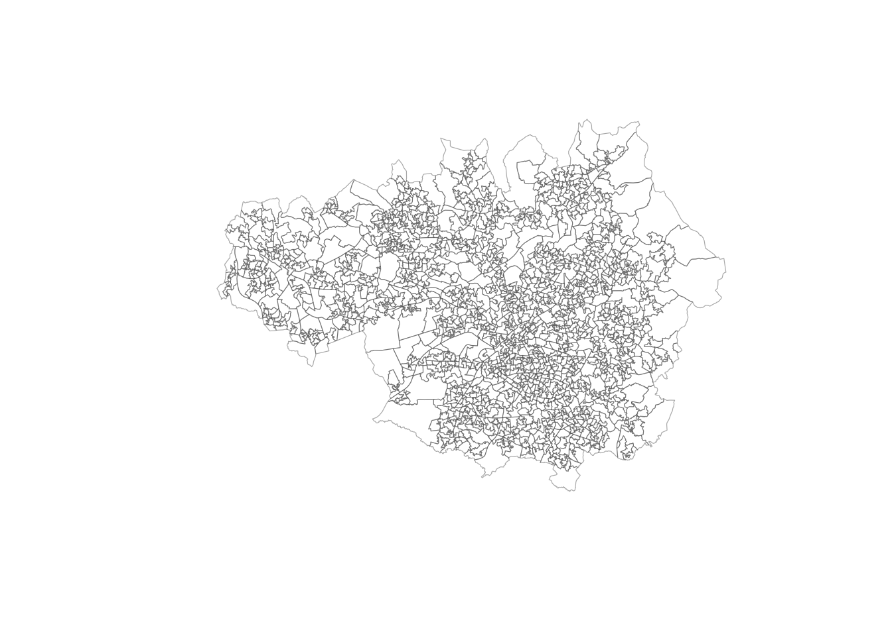
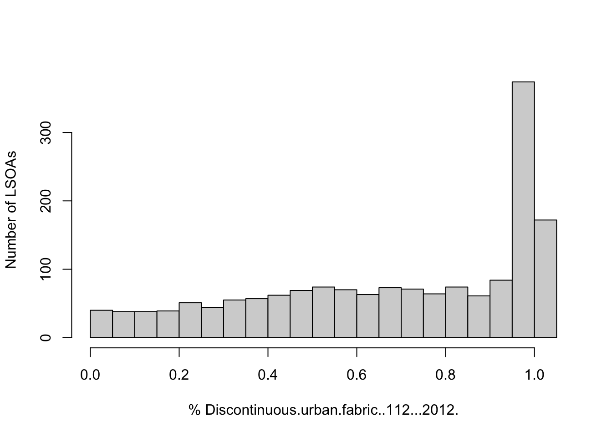
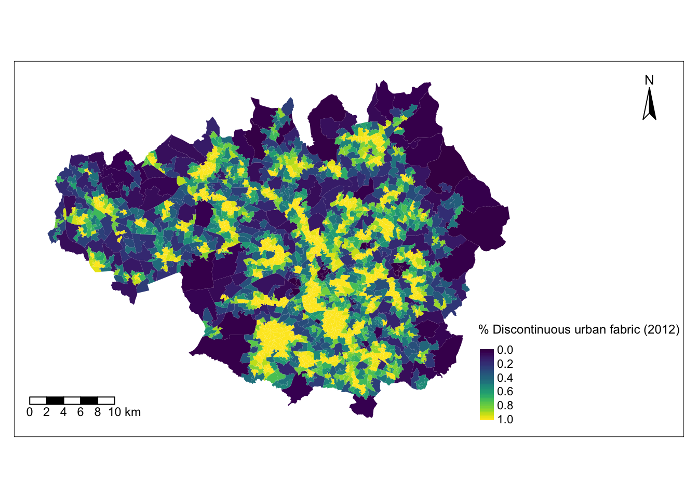
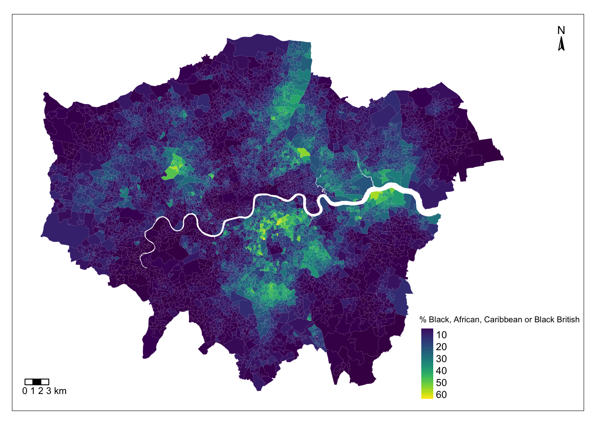
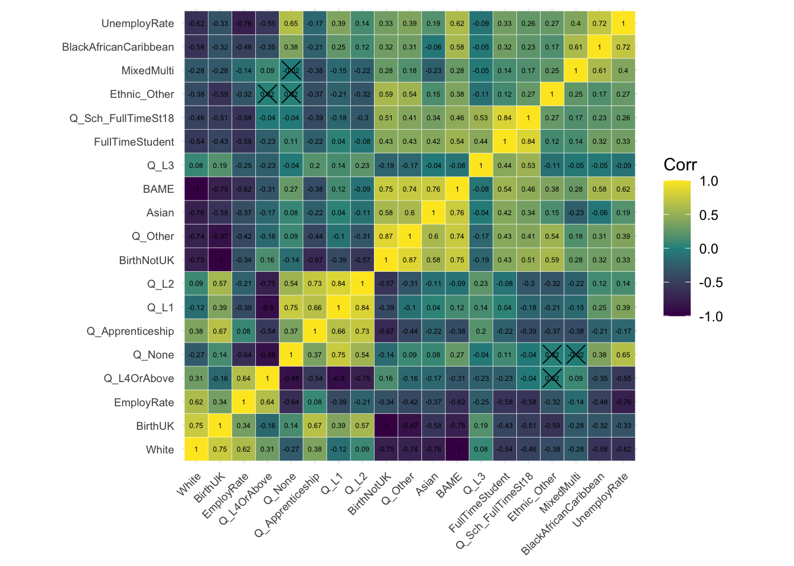
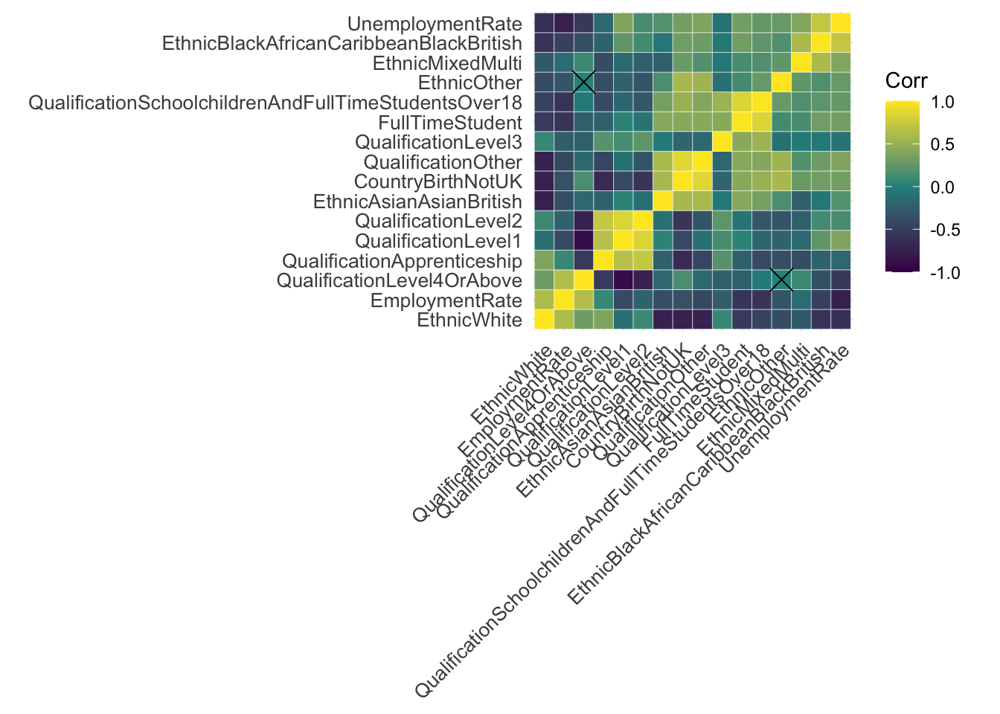
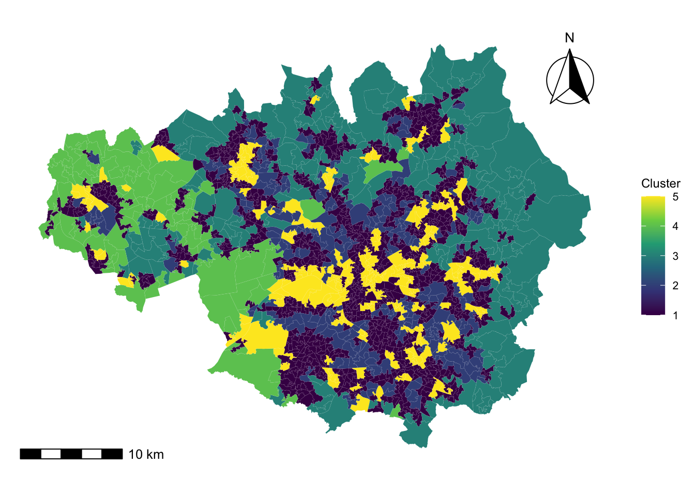

#Support for simple features, a standardised way to encode spatial vector data
library(sf)
#Data manipulation
library(dplyr)
#A system for creating graphics
library(ggplot2)
#Easy viisualisation of a correlation matrix using ggplot2
library(ggcorrplot)
#Color maps designed to improve graph readability
library(viridis)
#Alternative way of plotting, useful for radial plots
library(plotrix)
#Methods for cluster analysis
library(cluster)
#Thematic maps can be generated with great flexibility
library(tmap)
#Provides some easy-to-use functions to extract and visualize the output of multivariate data analyses
library(factoextra)3 Geodemographics
In this chapter we introduce the topic of geodemographics and geodemographic classifications. The chapter is based on the following references:
Creating a Geodemographic Classification Using K-means Clustering in R (Guy Lansley and James Cheshire, 2018)
Lecture 10 of the 2020-21 Work Book for the module GEOG0030 on Geocomputation, delivered at UCL Department of Geography.
Geodemographics is the statistical study of populations based on the characteristics of their location. It includes the application of geodemographic classifications (GDCs) or profiling whereby different locations are classified into groups based on the similarity in their characteristics.
Assuming that the geodemographic characteristics of a group are an indicator of how the people in that group behave, GDC can be a very useful tool to predict the behavioral patterns of different regions. For this reason, geodemographics and GDC have applications in many areas, from marketing and retail to public health or service planning industries.
3.1 Dependencies
This chapter uses the libraries below. Ensure they are installed on your machine, then execute the following code chunk to load them:
#Obtain the working directory, where we will save the data directory
getwd()[1] "/Users/franciscorowe/Library/CloudStorage/Dropbox/Francisco/uol/teaching/envs418/202526/r4ps"3.2 Data
3.2.1 Land use data for Greater Manchester
Land use patterns offer insights into the demographic characteristics and needs of a population within a specific area. How residents use their land reflects their preferences, demands, and activities. The extent of residential land indicates the size, density, and distribution of the population, as well as housing preferences and household sizes. The extent of commercial and industrial land use relates to economic activities, employment opportunities, and the overall economic vitality of a region. Agricultural land use might indicate the food demands and production capabilities of the population. Additionally, land designated for public services, education, healthcare, and recreation showcases the amenities and social infrastructure necessary to support the population’s needs and quality of life. Classifying regions by their similarity in their land use can therefore provide valuable insights into the lifestyle, economic status, and social requirements of the residents in a given area.
In this Chapter we will be looking at land use data provided by What do ‘left behind’ areas look like over time?, a project created by the Geographic Data Science Lab at the University of Liverpool to host open reproducible code and resulting data for the Briefing: “What do ‘left behind’ areas look like over time?”. The land use data is based on digital data from the CORINE Land Cover (CLC) dataset. This well-known dataset is compiled and maintained by the European Environment Agency (EEA) and derived from satellite imagery and aerial photographs, using remote sensing technology and image analysis techniques.
In particular, we use the file manchester_land_cover_2011.gpkg based on the file lsoa_land_cover.csv available here, which contains land use data for each Lower Layer Super Output Area (LSOA) in Greater Manchester.
LSOAs are geographic hierarchies designed to improve the reporting of small area statistics in England and Wales. LSOAs are built from groups of contiguous Output Areas (OAs) and have been automatically generated to be as consistent as possible in population size, with a minimum population of 1,000. For this reason, their spatial extent varies depending on how densely populated a region is. The average population of an LSOA in London in 2010 was 1,722.
3.2.2 Import the data
In the code chunk below we load the dataset described above, manchester_land_cover_2011.gpkg as a simple feature object and call it sf_LSOA. We will be generating some maps to show the geographical distribution of our data and results. To do this, we need the data that defines the geographical boundaries of the LSOAs. This data is included in the sf_LSOA variable, in the column called geom.
# The raw data can be obtained from link below, but it has been cleaned by Carmen Cabrera-Arnau for this chapter
# https://github.com/GDSL-UL/APPG-LBA/blob/main/data/lsoa_land_cover.csv
sf_LSOA <- st_read("./data/geodemographics/manchester_land_cover_2011.gpkg")Reading layer `manchester_land_cover_2011' from data source
`/Users/franciscorowe/Library/CloudStorage/Dropbox/Francisco/uol/teaching/envs418/202526/r4ps/data/geodemographics/manchester_land_cover_2011.gpkg'
using driver `GPKG'
Simple feature collection with 1673 features and 44 fields
Geometry type: MULTIPOLYGON
Dimension: XY
Bounding box: xmin: 351662.3 ymin: 381166 xmax: 406087.2 ymax: 421037.7
Projected CRS: OSGB36 / British National Grid3.3 Preparing the data for GDC
3.3.1 Choice of geographic units
Normally, GDCs involve the analysis of aggregated data into geographic units. Very small geographic units of data aggregation can provide more detailed results, but if the counts are too low, this could lead to re-identification issues.
As mentioned above, the data for this chapter is aggregated into LSOAs. The size of the LSOAs is small enough to produce detailed results and is also a convenient choice, since it is broadly used in the UK Census and other official data-reporting exercises.
We can visualise the LSOAs within Greater Manchester simply by plotting the geometry column of st_LSOA, which can be selected with the function st_geometry(). More sophisticated ways of visualising geographical data are available in R as we will see in forthcoming sections.
plot(st_geometry(sf_LSOA), border=adjustcolor("gray20", alpha.f=0.4), lwd=0.6)
3.3.2 Variables of interest
Any classification task must be based on certain criteria that determines how elements are grouped into classes. For GDC, these criteria are characteristics of the spatial units under study. In this case, we have prepared the file manchester_land_cover_2011.gpkg to contain some interesting land use data corresponding to each LSOA. The data frame sf_LSOA contains this data and we can visualise its first few lines by using the function head() and first four columns by subsetting the simple feature object:
head(sf_LSOA[,1:4])Simple feature collection with 6 features and 4 fields
Geometry type: MULTIPOLYGON
Dimension: XY
Bounding box: xmin: 368766.7 ymin: 411048.3 xmax: 372572.6 ymax: 414726.9
Projected CRS: OSGB36 / British National Grid
LSOA11CD LSOA11NM Sea.and.ocean..523...2012.
1 E01004766 Bolton 005A 0
2 E01004767 Bolton 005B 0
3 E01004768 Bolton 001A 0
4 E01004769 Bolton 003A 0
5 E01004770 Bolton 003B 0
6 E01004771 Bolton 003C 0
Continuous.urban.fabric..111...2012. geom
1 0 MULTIPOLYGON (((371567 4119...
2 0 MULTIPOLYGON (((371807.5 41...
3 0 MULTIPOLYGON (((370197.2 41...
4 0 MULTIPOLYGON (((371924.3 41...
5 0 MULTIPOLYGON (((372572.6 41...
6 0 MULTIPOLYGON (((371554.4 41...As we can see, each row contains information about an LSOA and each column (starting from the third column) represents a demographic characteristic of the LSOA and the people living there. With the function names(), we can get the names of the columns in sf_LSOA
names(sf_LSOA) [1] "LSOA11CD"
[2] "LSOA11NM"
[3] "Sea.and.ocean..523...2012."
[4] "Continuous.urban.fabric..111...2012."
[5] "Discontinuous.urban.fabric..112...2012."
[6] "Industrial.or.commercial.units..121...2012."
[7] "Sport.and.leisure.facilities..142...2012."
[8] "Non.irrigated.arable.land..211...2012."
[9] "Mineral.extraction.sites..131...2012."
[10] "Pastures..231...2012."
[11] "Natural.grasslands..321...2012."
[12] "Moors.and.heathland..322...2012."
[13] "Peat.bogs..412...2012."
[14] "Transitional.woodland.shrub..324...2012."
[15] "Water.bodies..512...2012."
[16] "Sparsely.vegetated.areas..333...2012."
[17] "Coniferous.forest..312...2012."
[18] "Mixed.forest..313...2012."
[19] "Broad.leaved.forest..311...2012."
[20] "Construction.sites..133...2012."
[21] "Green.urban.areas..141...2012."
[22] "Port.areas..123...2012."
[23] "Land.principally.occupied.by.agriculture..with.significant.areas.of.natural.vegetation..243...2012."
[24] "Water.courses..511...2012."
[25] "Road.and.rail.networks.and.associated.land..122...2012."
[26] "Dump.sites..132...2012."
[27] "Airports..124...2012."
[28] "Intertidal.flats..423...2012."
[29] "Estuaries..522...2012."
[30] "Beaches..dunes..sands..331...2012."
[31] "Inland.marshes..411...2012."
[32] "Salt.marshes..421...2012."
[33] "Complex.cultivation.patterns..242...2012."
[34] "Coastal.lagoons..521...2012."
[35] "Bare.rocks..332...2012."
[36] "Fruit.trees.and.berry.plantations..222...2012."
[37] "Burnt.areas..334...2012."
[38] "Agro.forestry.areas..244...2012."
[39] "LSOA11NMW"
[40] "BNG_E"
[41] "BNG_N"
[42] "LONG"
[43] "LAT"
[44] "GlobalID"
[45] "geom" We can explore the summary statistics for each of the variables with the summary() function applied on the variable of interest. For example, to obtain the summary statistics for the proportion of land dedicated to discontinuous urban fabric in 20212 Discontinuous.urban.fabric..112...2012, we can run the code below:
summary(sf_LSOA$Discontinuous.urban.fabric..112...2012.) Min. 1st Qu. Median Mean 3rd Qu. Max.
0.0000 0.4445 0.7474 0.6823 0.9958 1.0000 This tells us that the mean or average proportion of land dedicated to discontinuous urban fabric in LSOAs within Greater Manchester is 0.6823. It also tells us that 1 is the proportion of land dedicated to discontinuous urban fabric in the LSOA with the maximum proportion of land dedicated to this use.
To visualise the whole distribution of the variable Discontinuous.urban.fabric..112...2012., we can plot a histogram:
hist(sf_LSOA$Discontinuous.urban.fabric..112...2012., breaks=15, xlab="% Discontinuous.urban.fabric..112...2012.", ylab='Number of LSOAs', main=NULL)
The histogram reveals that many LSOAs have a high proportion of discontinuous urban fabric, but there are a few with more than 50% of their land dedicated to this use.
Now the question is whether the LSOAs with similar proportions of discontinuous urban fabric are also spatially close. To find out, we need to map the data. We can do this by using the tmap library functions. We observe that, LSOAs in the South of Greater Manchester tend to have high proportions of discontinuous urban fabric, while LSOAs in the peripheries have a low proportion of this type of land use.
legend_title = expression("% Discontinuous urban fabric (2012)")
map_discountinuous = tm_shape(sf_LSOA) +
tm_fill(col = "Discontinuous.urban.fabric..112...2012.", title = legend_title, text.size = 28, palette = viridis(256), style = "cont") + # add fill
tm_layout(legend.position = c(0.69, 0.02), legend.title.size=0.9, inner.margins=c(0.05, 0.05, 0.05, 0.26)) +
tm_borders(col = "white", lwd = .01) + # add borders
tm_compass(type = "arrow", position = c("right", "top") , size = 2) + # add compass
tm_scale_bar(breaks = c(0,2,4,6,8,10), text.size = 0.8, position = c("left", "bottom")) # add scale bar
map_discountinuous
3.4 Standardisation
3.4.1 Across geographic units
LSOAs have been designed to have similar population sizes, so their area fluctuates. If the area of an LSOA is bigger or smaller, this can affect the figures corresponding to land use (e.g. presumably, the larger the total area, the hectares will be dedicated to a certain use).
To counter the effect of varying sizes across geographic units, we always need to standardise the data so it is given as a proportion or a percentage. This has already been done in the dataset manchester_land_cover_2011.gpkg, however, if you were to create your own dataset, you need to take this into account. To compute the right percentages, it is important to consider the right denominator. For example, if we are computing the percentage of people over the age of 65 in a given geographic unit, we can divide the number of people over 65 by the total population in that geographic unit, then multiply by 100. However, if we are computing the percentage of single-person households, we need to divide the number of single-person households by the total number of households (and not by the total population), then multiply by 100.
3.4.2 Variable standardisation
Data outliers are often present when analysing data from the real-world. These values are generally extreme and difficult to treat statistically. In GDC, they could end up dominating the classification process. To avoid this, we need to standardise the input variables as well, so that they all contribute equally to the classification process.
There are different methods for variable standardisation, but here we will achieve this by computing the Z-scores for each variable, i.e. for variable \(X\), Z-score = \(\dfrac{X-mean(X)}{std(X)}\) where \(std()\) refers to standard deviation. In R, obtaining the Z-score of a variable is very simple with the function scale(). Since we want to obtain the Z-scores of all the variables under consideration, we can loop over the columns corresponding to the variables that we want to standardise. Before doing this, we create a dataframe based on sf_LSOA but dropping the geometry column:
# creates a new data frame based on sf_LSOA
df_std <- sf_LSOA %>% st_drop_geometry()
# extracts column names from df_std
colnames_df_std <- colnames(df_std)
# loops columns from position 3 : the last column
for(i in 3: 38){
df_std[[c(colnames_df_std[i])]] <- scale(as.numeric(df_std[, colnames_df_std[i]]))
}After the standardisation, some columns in df_std contain NaN. For simplicity, we will remove these columns from the resulting dataframe as below, and we will redefine the variable containing the column names so that it only stores the column names corresponding to landuse variables:
df_std <- df_std %>% select_if(~ !any(is.na(.)))
colnames_df_std <- colnames(df_std)[3:(ncol(df_std)-6)]3.5 Checking for variable association
Before diving into the clustering process, it is necessary to check for variable associations. Two variables that are strongly associated could be conveying essentially the same information. Consequently, excessive weight could be attributed to the phenomenon they refer to in the clustering process. There are different techniques to check for variable association, but here we focus on the Pearson’s correlation matrix.
Each row and column in a Pearson’s correlation matrix represents a variable. Each entry in the matrix represents the level of correlation between the variables represented by the corresponding row and column. In R, a Pearson’s correlation matrix can be created very easily with the corr() function, where the method parameter is set to “pearson”. As a general rule, two variables with correlation coefficient greater than 0.8 or smaller than -0.8 are considered to be highly correlated. If this is the case, we might want to discard one of the two variables since the information they convey is redundant. However, in some cases, it might be reasonable to keep both variables if we can argue that they both have a similar but unique meaning.
The correlation coefficients by themselves are not enough to conclude whether two variables are correlated. Each correlation coefficient must be computed in combination with its p-value. For this reason, we also apply the cor_pmat() function below, which outputs a matrix of p-values corresponding to each correlation coefficient. Here, we set the confidence level at 0.9, therefore, p-values smaller than 0.1 are considered to be statistically significant. In the correlation matrix plot, we add crosses to indicate which correlation coefficients are not significant (i.e. those above 0.1). Those crosses indicate that there is not enough statistical evidence to reject the claim that the variables in the corresponding row and column are uncorrelated.
# Matrix of Pearson correlation coefficients
corr_mat <- cor(df_std[,c(colnames_df_std)], method = "pearson")
# Matrix of p-values
corr_pmat <- cor_pmat(df_std[,c(colnames_df_std)], method = "pearson", conf.level = 0.95)
# Barring the no significant coefficient
ggcorrplot(corr_mat, tl.cex=5, hc.order = TRUE, outline.color = "white", p.mat = corr_pmat, colors = c(viridis(3)), lab=TRUE, lab_size=1.5)
Among the statistically significant values in the correlation matrix, we can see that none of the variables display a strong correlation (i.e. close to -1 or 1), except of course, each variable with itself (as shown in the diagonal cells of the correlogram). In fact, many of the measured correlations are not significant. Therefore, we do not need to remove any variables from the analysis. However, if we had found a strong correlation between a pair of variables which is statistically significant, we could remove one of the two variables, since they would be both capturing very similar information.
3.6 The clustering process
3.6.1 K-means
K-means clustering is a way of grouping similar items together. To illustrate the method, imagine you have a bag filled with vegetables, and you want to separate them into smaller bags based on their color, size and flavour. K-means would do this for you by first randomly selecting a number k of vegetables (you provide k, e.g. k=4), and then grouping all the other vegetables based on which of the k vegetables selected initially they are closest to in color, size and flavour. This process is repeated a few times until the vegetables are grouped as best as possible. The end result is k smaller bags, each containing veg of similar color, size and flavour. This is similar to how k-means groups similar items in a data set into clusters.
More technically, k-means clustering is actually an algorithm of unsupervised learning (we will learn more about this in Chapter 10) that partitions a set of points into k clusters, where k is a user-specified number. The algorithm iteratively assigns each point to the closest cluster, based on the mean of the points in the cluster, until no point can be moved to a different cluster to decrease the sum of squared distances between points and their assigned cluster mean. The result is a partitioning of the points into k clusters, where the points within a cluster are as similar as possible to each other, and as dissimilar as possible from points in other clusters.
In R, k-means can be easily applied by using the function k-means(), where some of the required arguments are: the dataset, the number of clusters (which is called centers), the number of random sets to choose (nstart) or the maximum number of iterations allowed. For example, for a 4-cluster classification, we would run the following line of code:
Km <- kmeans(df_std[,c(colnames_df_std)], centers=4, nstart=20, iter.max = 1000)3.6.2 Number of clusters
As mentioned above, the number of clusters k is a parameter of the algorithm that has to be specified by the user. Ultimately, there is no right or wrong answer to the question ‘what is the optimum number of clusters?’. Deciding the value of k in the k-means algorithm can be a somewhat subjective process where in most cases, common sense is the most useful approach. For example, you can ask yourself if the obtained groups are meaningful and easy to interpret or if, on the other hand, there are too few or too many clusters, making the results unclear.
However, there are some techniques and guidelines to help us decide what the right number of clusters is. Here we explore the silhouette score method.
The silhouette score of a data point (in this case an LSOA and its demographic data) is a measure of how similar this data point is to the data points in its own cluster compared to the data points in other clusters. The silhouette score ranges from -1 to 1, with a higher value indicating that the data point is well matched to its own cluster and poorly matched to neighbouring clusters. A score close to 1 means that the data point is distinctly separate from other clusters, whereas a score close to -1 means the data point may have been assigned to the wrong cluster. Given a number of clusters k obtained with k-means, we can compute the average silhouette score over all the data points. Then, we can plot the average silhouette score against k. The optimal value of k will be the one with the highest k score.
You can run the code below to compute the average silhouette score corresponding to different values of k ranging from 2 to 20. The optimum number of clusters is given by the value of k at which the average silhouette is maximised.
# Specify a random number generator seed for reproducibility
set.seed(123)
silhouette_score <- function(k){
km <- kmeans(df_std[,c(colnames_df_std)], centers = k, nstart=5, iter.max = 1000)
ss <- silhouette(km$cluster, dist(df_std[,c(colnames_df_std)]))
mean(ss[, 3])
}
k <- 2:20
avg_sil <- sapply(k, silhouette_score)
plot(k, type='b', avg_sil, xlab='Number of clusters', ylab='Average Silhouette Scores', frame=FALSE)
From the figure, we can see that the optimum k is 12. Note, this number might be different when you run the programme since the clustering algorithm involves some random steps, unless you set the seed to 123 as we did above. A number of clusters of k=12 is too high for our results to be insightful and interpretable. Therefore, to keep our interpretations simpler, we will pick a lower number of clusters to help us undertand our data better, such as 5.
# Specify a random number generator seed for reproducibility
set.seed(123)
Km <- kmeans(df_std[,c(colnames_df_std)], centers=5, nstart=20, iter.max = 1000)3.6.3 Other clustering methods
There are several other clustering methods apart from k-means. Each method has its own advantages and disadvantages, and the choice of method will ultimately depend on the specific data and clustering problem. We will not explore these methods in detail, but below we include some of their names and a brief description. If you want to learn about them, you can refer to the book “Pattern Recognition and Machine Learning” by Christopher Bishop (Bishop 2006).
Fuzzy C-means: a variation of k-means where a data point can belong to multiple clusters with different membership levels.
Hierarchical clustering: this method forms a tree-based representation of the data, where each leaf node represents a single data point and the branches represent clusters. A popular version of this method is agglomerative hierarchical clustering, where individual data points start as their own clusters, and are merged together in a bottom-up fashion based on similarity.
DBSCAN: a density-based clustering method that groups together nearby points and marks as outliers those points that are far away from any cluster.
Gaussian Mixture Model (GMM): GMMs are probabilistic models that assume each cluster is generated from a Gaussian distribution. They can handle clusters of different shapes, sizes, and orientations.
3.7 GDC results
3.7.1 Mapping the clusters
Our LSOAs are now grouped into 5 clusters according to the similarity in their land use characteristics. We can include to our dataset the cluster where each geographical unit belongs to:
df_std$cluster <- Km$clusterTo map the results from clustering, we add the spatial inforamtion which we recover from sf_LSOA.
# Get the geometry column from the sf object
geometry_column <- st_geometry(sf_LSOA)
# Set the geometry column in the dataframe which becomes a simple feature object
sf_std <- st_set_geometry(df_std, geometry_column)Finally, we can plot the results of the clustering process on a map using functions from the tmap library:
map_cluster = tm_shape(sf_std) +
tm_fill(col = "cluster", title = "Cluster", palette = viridis(256), style = "cont") + # add fill
tm_borders(col = "white", lwd = .01) + # add borders
tm_layout(legend.position = c(0.9, 0.02), legend.title.size=0.9, inner.margins=c(0.05, 0.05, 0.05, 0.05)) +
tm_compass(type = "arrow", position = c("right", "top") , size = 2) + # add compass
tm_scale_bar(breaks = c(0,2,4,6,8,10), text.size = 0.8, position = c("left", "bottom")) # add scale bar
map_cluster
Note: sometimes, the number of items in a cluster may be very small. In that case, you may want to merge two clusterx to make the number of items in each group more homogeneous or perhaps change k in the k-means algorithm.
3.7.2 Cluster interpretation
The map above not only displays the clusters where each LSOA belongs, but it also shows that there is a tendency for LSOAs belonging to the same cluster to be geographically close. This indicates that LSOAs with similar land use characteristics are close to each other. However, we still need to understand what each cluster represents.
The so-called cluster centers (kmCenters) are the data points that, within each cluster, provide a clear indication of the average characteristics of the cluster where they belong based on the variables used in the classification. The data used in the clustering process was Z-score standardised, so the values of each variable corresponding to the cluster centers are still presented as Z-scores. Zero indicates the mean for each variable across all the data points in the sample, and values above or below zero indicate the number of standard deviations from the average. This makes it easy to understand the unique characteristics of each cluster relative to the entire sample. To visualise the characteristics and meaning of the clusters centers and their corresponding clusters, we use radial plots. Below we produce a radial plot for cluster 1. Can you see which variables are higher or lower than average in this cluster? If you want to visualise the radial plot for other clusters, you will need to change the number inside the brackets of KmCenters\[1,\].
# creates a radial plot for cluster 1
# the boxed.radial (False) prevents white boxes forming under labels
# radlab rotates the labels
KmCenters <- as.matrix(Km$centers)
KmCenters <- as.data.frame(KmCenters)
radial.plot(KmCenters[1,], labels = colnames(KmCenters),
boxed.radial = FALSE, show.grid = TRUE,
line.col = "blue", radlab = TRUE, rp.type="p", label.prop=1, mar=c(3,3,3,3))
3.7.3 Testing
We will evalueate the fit of the k-means model with 5 clusters by creating an x-y plot of the of the first two principal components of each data point. Each point is coloured according to the cluster where it belongs. Remember that the aim of principal component analysis is to create the minimum number of new variables based on a combination of the original variables that can explain the variability in the data. The first principal component is the new variable that captures the most variability.
In the plot below, we can see the first and second principal components in the x and y axes respectively, with the axis label indicating the amount of variability that these components are able to explain. To create the plot, we use the fviz_cluster() function from the factoextra library.
fviz_cluster(Km, data = df_std[,c(colnames_df_std)], geom = "point", ellipse = F, pointsize = 0.5,
ggtheme = theme_classic())
There are obvious clusters in the plot, but some points are in the overlapping regions of two or more clusters, making it unclear to what cluster they should really belong. This is a result of the fact that the plot is only representing two of the principal components, and there are other variables that are not captured in this 2-dimensional representation.
3.8 Questions
For this set of questions, we will be using the same dataset that we used for Chapter 3, but for Greater London:
sf_LSOA <- st_read("./data/geodemographics/london_land_cover_2011.gpkg")Reading layer `london_land_cover_2011' from data source
`/Users/franciscorowe/Library/CloudStorage/Dropbox/Francisco/uol/teaching/envs418/202526/r4ps/data/geodemographics/london_land_cover_2011.gpkg'
using driver `GPKG'
Simple feature collection with 4835 features and 44 fields
Geometry type: MULTIPOLYGON
Dimension: XY
Bounding box: xmin: 503574.2 ymin: 155850.8 xmax: 561956.7 ymax: 200933.6
Projected CRS: OSGB36 / British National GridPrepare your data for a geodemographic classification (GDC). To do this, start by standardising the land use variables. Then, check for variable association using a correlation matrix. Discard any variables if necessary. Now you should be ready to group the data into clusters using the k-means algorithm. Report the optimal number of clusters based on the average silhouette score method. Select the number of clusters for a GDC with k-means according to this method or otherwise. Join the resulting dataset with the LSOA boundary data. Every time you apply the kmeans() function, you should set nstart=20 and iter.max=1000.
Essay questions:
- Describe how you prepared your data for the GDC. There is no need to include figures, but you should briefly explain how you reached certain decisions. For example, did you discard any variables due to their strong association with other variables in the dataset? How did you pick the number of clusters for your GDC?
- Map the resulting clusters and generate a radial plot for one of the clusters. You should create just one figure with as many subplots as needed.
- Describe what you observe and comment on your results. Do you observe any interesting patterns? Do the results of this GDC agree with what you would expect? Justify your answer.
Bishop, Christopher M. 2006. Pattern Recognition and Machine Learning. Information Science and Statistics. New York: Springer.